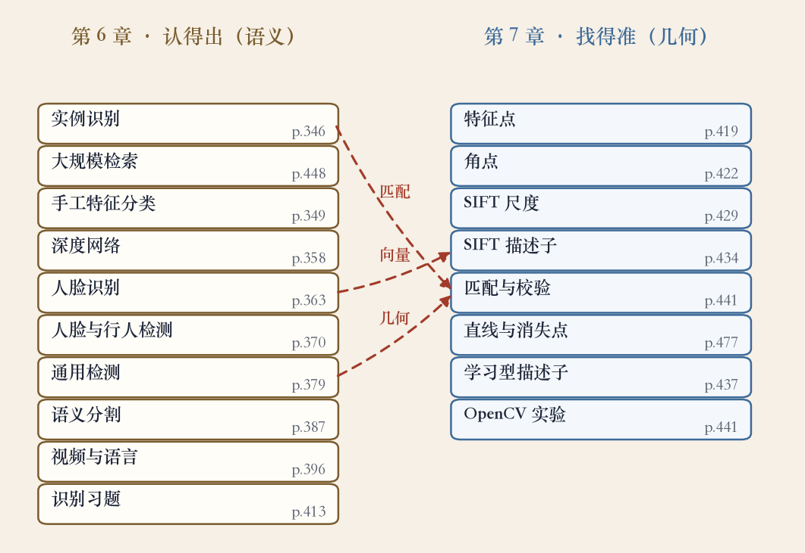

复盘课 · 第 6 章识别 + 第 7 章特征
从认得出到找得准
- 上一集跑通了 OpenCV 的提点、配对、互检、RANSAC、叠图。
- 这一集不进新章，把第 6、7 章接起来。
- 第 6 章回答这是什么，从第 343 页开始。
- 第 7 章回答怎么对上，从第 417 页开始。
依据：原书第 343/417 页；上一集实验课
两条线
认得出：把整图或区域变成标签
找得准：在两张图之间建立对应
前者要语义，后者要几何
难的识别，两样都要
两章总览 · 识别链十站 + 特征链八站
十八个主题，三条连接
- 左列第 6 章识别链十个主题。
- 右列第 7 章特征链八个主题。
- 三条虚线：实例识别靠匹配，人脸靠向量。
- 检测与匹配都依赖空间一致性。
依据：本集程序生成图；各集回链台账

识别链十站与特征链八站：三条虚线相连｜程序生成，未用教材或论文原图
第 6 章 · 实例识别 · 原书第 346 页起
实例识别：先找特征，再验几何
- 第 6 章从实例识别开始。
- 先找有辨识度的局部特征。
- 再验证特征的空间关系是否一致。
- 难点是同一个物体、不同角度。
依据：原书第 346–349 页
第 6 章 · 分类与深度网络 · 原书第 349/358 页
分类：瓶颈先卡在表示
- 手工特征把图变成一组全局描述子。
- 再交给分类器判断类别。
- 光照、遮挡、细粒度差异常不够用。
- 深度网络改成端到端学习特征。
依据：原书第 349/358 页
两次变化
手工特征：人造表示
深度网络：端到端学习
表示更厚、更可调
第 6 章 · 人脸、检测、分割 · 原书第 363/370/387 页
从是谁到在哪里
- 人脸识别要认同一人的不同光照和角度。
- 做法是把人脸压成向量，比向量距离。
- 检测给物体框，分割给每像素类别。
- 输出不同，背后都在找局部证据。
依据：原书第 363/370/387 页
三种输出
人脸：向量距离
检测：物体框
分割：逐像素类别
第 6 章收尾 + 第 7 章开章 · 原书第 396/400/417/419 页
换问题：哪些点值得信任
- 视频理解把动作放到时间上看。
- 视觉语言模型把图像和文字放进同一空间。
- 第 7 章先问哪些点值得信任。
- 特征分成点、边缘、轮廓、直线。
依据：原书第 396/400/417/419 页
第 7 章 · 四步流程 · 原书第 422/429/434/441/477 页
找得准：四步与三项校验
- 流程是检测、描述、匹配、验证。
- SIFT 关键点带尺度，描述子带方向直方图。
- 匹配后做比率测试、互检和几何校验。
- 第 477 页把点推广到直线和消失点。
依据：原书第 422–441/477 页
三项校验
比率测试：看像不像
互检：是不是彼此唯一
RANSAC：几何上说不说得通
第 7 章 · 学习型描述子 · 原书第 437–440 页
描述子：按场景选
- BRIEF、ORB、BRISK、FREAK 之后有 SuperPoint。
- 实验课量过：ORB 内点率略低，速度更快。
- SIFT 内点更多，误差更小。
- 低纹理、大视角的图，排序可能反过来。
依据：原书第 437–440 页；上一集实验
实验读数
ORB：快，内点率略低
SIFT：慢，内点更多、误差更小
换场景，排序可能反转
复盘 · 两句话 · 移交第 8 章
两条线合流
- 认得出，是给图像以名字。
- 找得准，是给图像以对应。
- 名字靠表示，对应靠几何。
- 下一章讲图像对齐与拼接。
依据：原书第 343/417 页；移交下一集
两句话
认得出：给图像以名字
找得准：给图像以对应
名字靠表示，对应靠几何